7 月 4 日：Object-centric LeJEPA 等视觉表征论文归档
本页按日期归档近期论文，保留优先级、主题、来源与方法线索，方便回看同一批工作的研究脉络。
先读 Object-centric LeJEPA。把 LeJEPA 从整图预测推进到对象级表示对齐，是今天最直接的通用视觉 SSL 方法论文。 其余论文按 P1/P2 与主题顺序扫读，重点看方法图、消融设置和是否能迁移到通用视觉表征。
论文索引
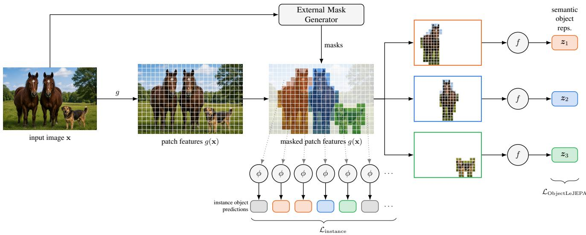
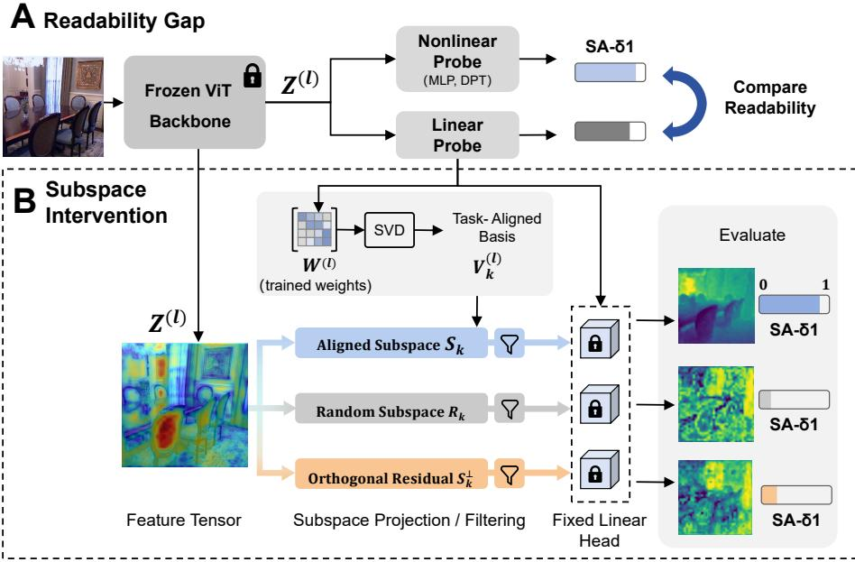
Understanding Geometric Representations in Self-Supervised Vision Transformers via Subspace Intervention
高相关；详见方法、贡献和实验边界。
方法：用子空间干预解释 DINOv2、MAE 等 SSL ViT 如何编码 dense geometry，直接服务 backbone/decoder 设计
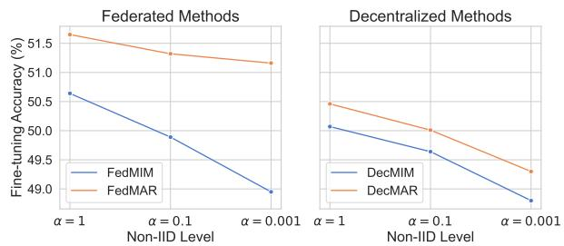
Understanding the Robustness of Distributed Self-Supervised Learning Frameworks Against Non-IID Data
高相关；详见方法、贡献和实验边界。
方法：理论上比较 MIM 与 contrastive learning 在非 IID 分布式自监督中的稳健性，并提出 MAR loss
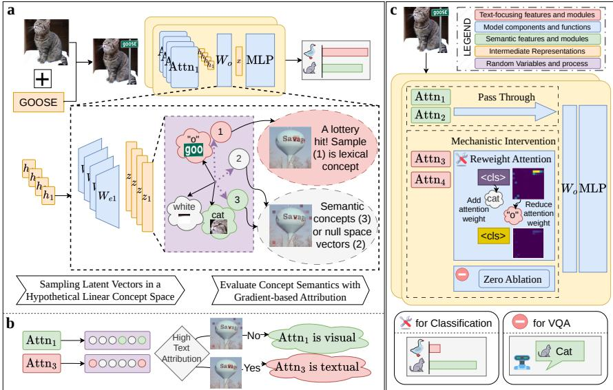
Towards Robustness against Typographic Attack with Training-free Concept Localization
中高相关；详见方法、贡献和实验边界。
方法：定位 CLIP/LVLM 视觉编码器被图中文字劫持的注意力/电路机制，对通用视觉-语言表征可靠性重要
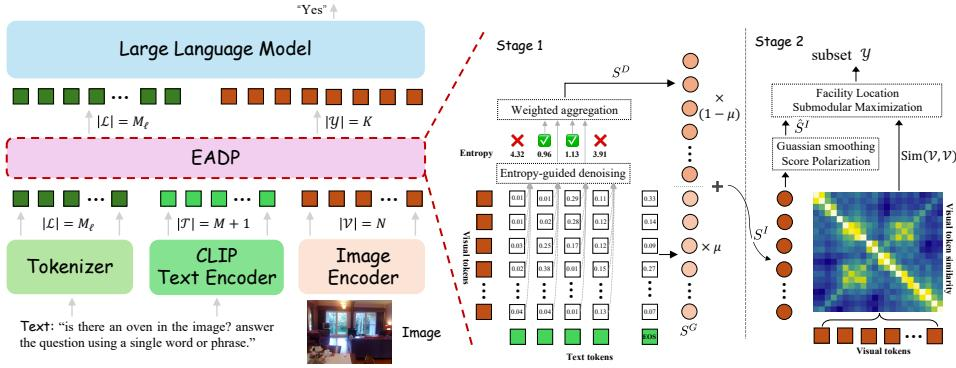
Combating Textual Noise and Redundancy: Entropy-Aware Dense Visual Token Pruning
中高相关；详见方法、贡献和实验边界。
方法：把 VLM token pruning 从 top-k 选择改为抗文本噪声的结构化压缩，关注细粒度视觉证据保留
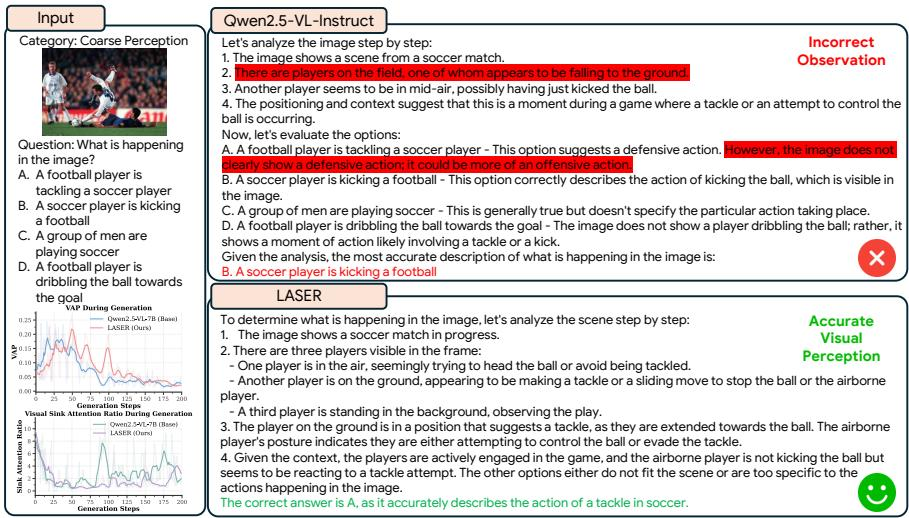
LASER: A Corrective Lens for LVLMs via Visual Attention Preservation and Sink Suppression
中高相关；详见方法、贡献和实验边界。
方法：处理长推理中视觉注意力衰减和 visual sink token，适合作为 LVLM 表征保真诊断材料
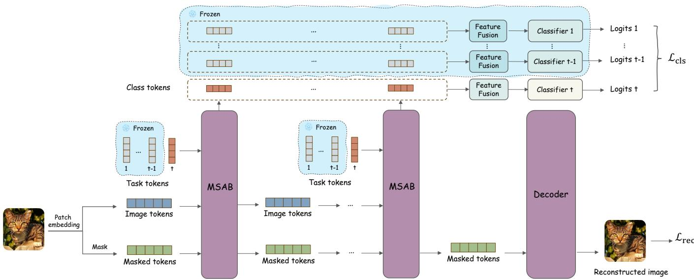
DRDN: Decoupled Representation Dynamic Network for From-Scratch ViT Class-Incremental Learning
中相关；详见方法、贡献和实验边界。
方法：虽然是 class-incremental learning，但持续 MIM 保护任务无关视觉结构的设计可迁移
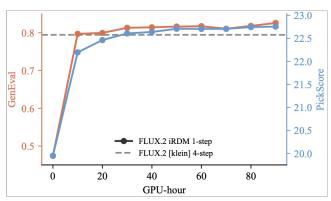
Representation Distribution Matching for One-Step Visual Generation
中相关；详见方法、贡献和实验边界。
方法：用多编码器特征分布约束 one-step generator，反映 frozen visual representations 如何作为生成训练信号
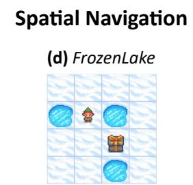
Visually Grounded Self-Reflection for Vision-Language Models via Reinforcement Learning
中相关；详见方法、贡献和实验边界。
方法：强调 self-reflection 必须回看视觉证据，适合作为 VLM 视觉 grounding 训练信号参考
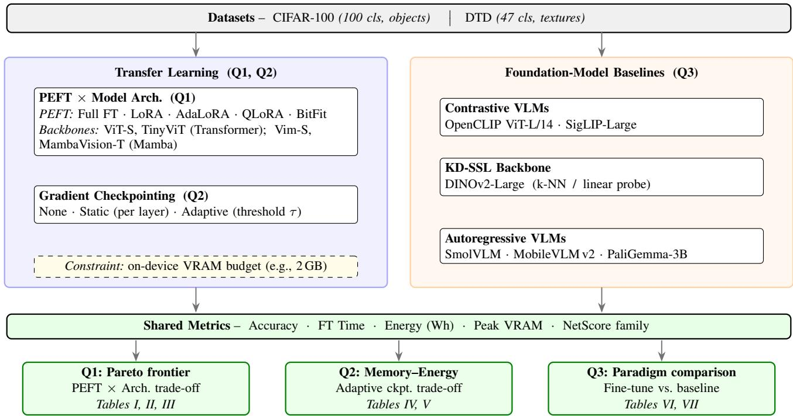
Efficient PEFT Methods with Adaptive Checkpointing for Vision Models and VLMs on Resource Constrained Consumer-GPUs
中相关；详见方法、贡献和实验边界。
方法：不是预训练方法，但给出 DINOv2/OpenCLIP/小型 VLM 在低显存 fine-tuning 下的部署对比
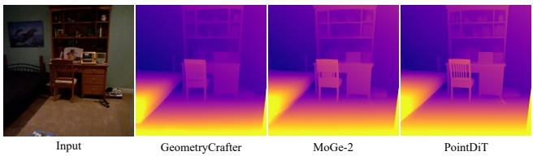
PointDiT: Pixel-Space Diffusion for Monocular Geometry Estimation
中相关；详见方法、贡献和实验边界。
方法：不是 SSL 训练，但直接使用 DINOv3 image tokens 作为几何扩散条件，能观察 DINO 表征的 dense transfer
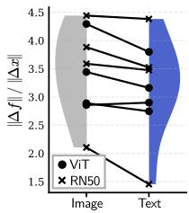
Domain Generalization via Text-Anchored Information Bottleneck
中相关；详见方法、贡献和实验边界。
方法：用语言 embedding 作为信息瓶颈抑制环境伪相关，和视觉-语言表征的 domain invariance 相关